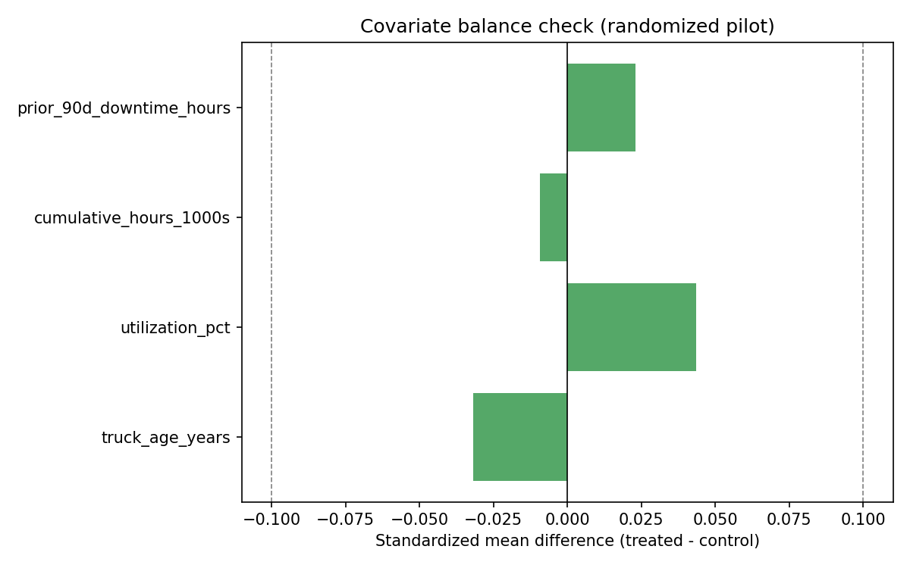
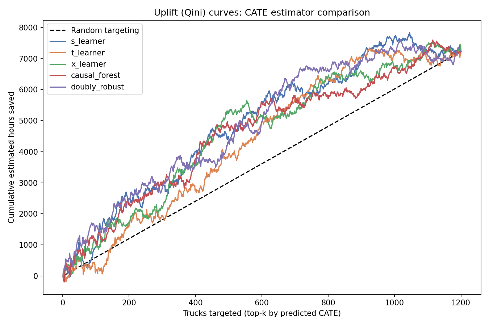
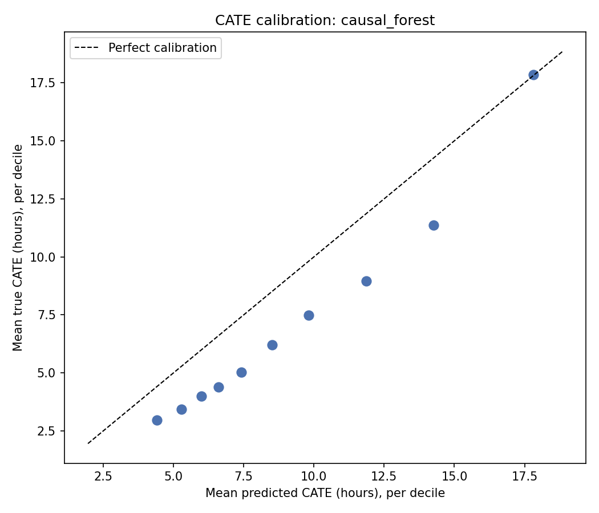
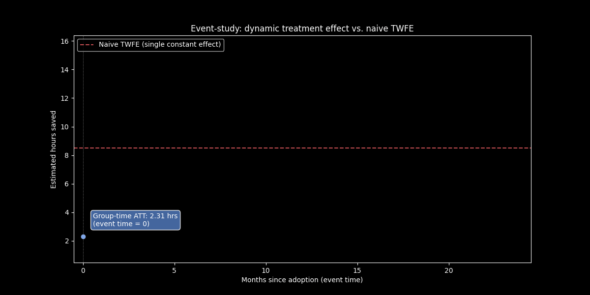
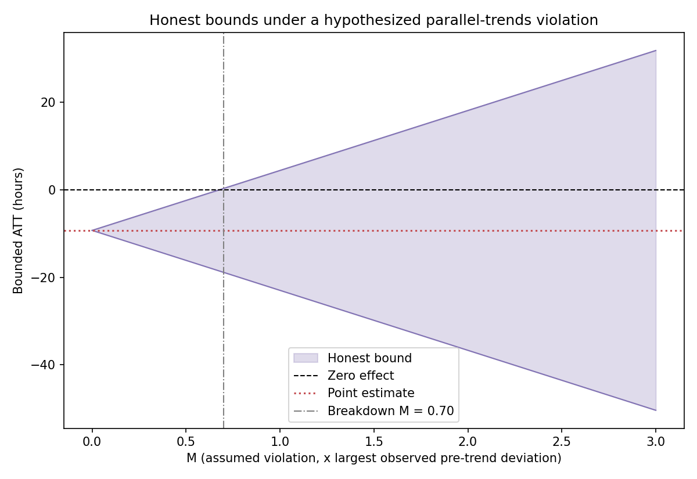
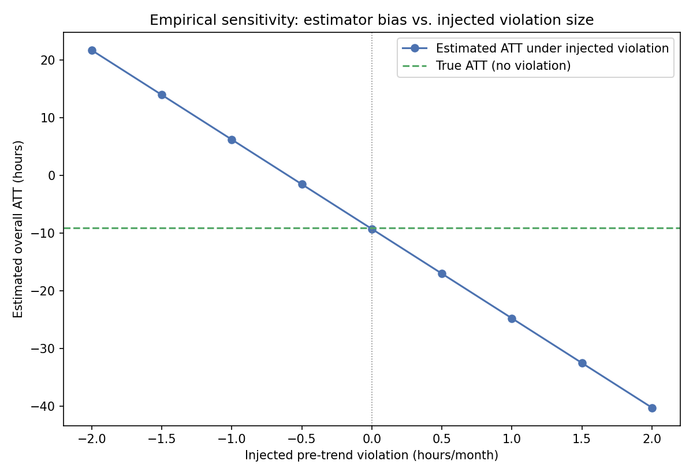

Causal Impact of a Fleet Maintenance Program: RCT Uplift Modeling and Staggered-Adoption DiD
This project answers two different causal questions about the same intervention — a proactive maintenance program for a CAEX haul-truck fleet — depending on how it was rolled out:
This page shows the project's results. The methodology, the design decisions and the limitations are documented in the repository's README.
7.1 Part A: RCT-based CATE estimation

Average effect: naive diff-in-means ATE (training set) = 10.69h saved; true ATE on the test set = 7.17h saved — the naive estimate overstates the true average, a reminder that even a randomized pilot's simple difference in means is a noisy single-sample estimate of the true average effect, not the true average effect itself.

Interactive: predicted vs. true CATE, all 5 estimators, same held-out test set — click a legend entry to toggle an estimator on or off and hover any point for its exact predicted/true value in hours; Causal Forest DML is shown by default since it has the highest ground-truth recovery correlation. Generated by [src/visualization/interactive_plots.py](src/visualization/interactive_plots.py), which refits the same 5 estimators on the same seed-42 train/test split used everywhere else in this README — not a separate or illustrative run.

Interactive: predicted vs. true CATE, all 5 estimators, same held-out test set — click a legend entry to toggle an estimator on or off and hover any point for its exact predicted/true value in hours; Causal Forest DML is shown by default since it has the highest ground-truth recovery correlation. Generated by [src/visualization/interactive_plots.py](src/visualization/interactive_plots.py), which refits the same 5 estimators on the same seed-42 train/test split used everywhere else in this README — not a separate or illustrative run.
The 97.7% is a best case. Causal Forest is the estimator that recovers the true effect best, and that is known only because the data are simulated: selecting it with the true effect on the same test set flatters it. All five estimators on the same 1,200-truck test set, 360 trucks treated:
7.3 Part B: staggered-adoption difference-in-differences

7.4 Sensitivity analysis: how fragile is the group-time ATT?

Honest finding, not smoothed over: a breakdown value of 0.70 sounds fragile, and taken alone it would be. But the placebo test's *mean* being essentially zero (−0.053h) across 48 estimates indicates there's no *systematic* pre-trend violation — the 13.71h figure driving the bound is the single largest draw from noisy, small-sample placebo estimates, not evidence of an actual violation. This is precisely why this project reports the mean *and* the max, not just the max: a bound built from the noisiest available statistic is necessarily conservative, and a real deployment with more sites per cohort (this project uses 8) would shrink that noise and loosen the bound directly, without needing to assume the true violation is any smaller.

The event-study curve shows the effect starting near zero at adoption and growing toward the plateau over the following months, with visibly increasing noise at later event-times — an honest, structural feature of a staggered design: only the earliest-adopting cohort has data that far past its own adoption date, so later event-time points are estimated from far fewer sites, not from a worse method.
Part B on `mpdta`: agreement with an independent implementation
- This checks the implementation, not the economics. The code reproduces a reference on data it was not designed around.
Part A on the Hillstrom e-mail experiment: CATE rankings on a real randomized trial
- Women's campaign: real heterogeneity. Every estimator beats random targeting, and targeting the top 30% raises the effect from 4.3 pp to between 6.0 and 7.3 pp. Causal forest and doubly robust lead; the T-learner is last.